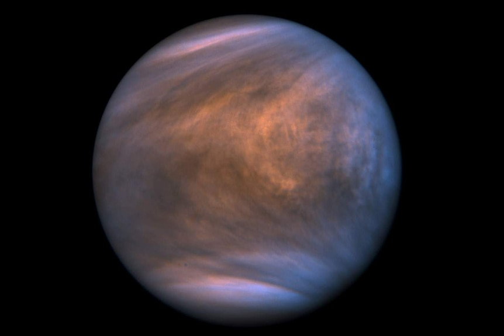
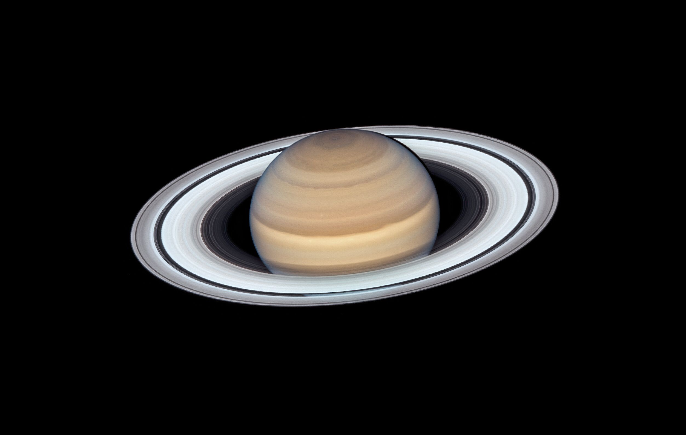
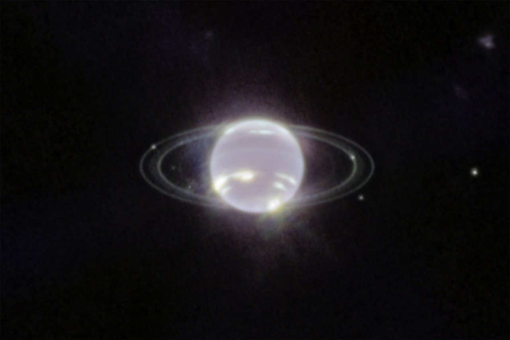
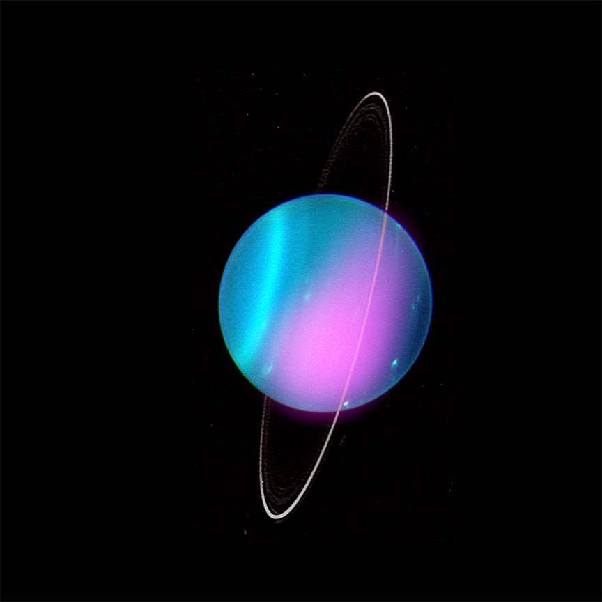

Mercury
Mercury Has Magnetic Storms!!
An international team of scientists has proved that Mercury, our solar system's smallest planet, has geomagnetic storms similar to those on Earth.

Venus
Trace Gas Phosphine Points to Volcanic Activity on Venus, Scientists Say.Last autumn, researchers reported finding the gas phosphine in trace amounts in Venus' upper atmosphere, raising the slim possibility of a biological signature.

Earth
Willow project has been accepted by the President Biden. This can possibly ruin earth and there have been so much climate changes. The world has been getting hotter and hotter each days.

Mars
An international team of researchers with NASA's InSight mission located four new craters created by impacts on the surface of Mars. Using data from a seismometer and visuals acquired from the Mars Reconnaissance Orbiter, the team successfully calculated and confirmed the impact locations. This is the first time that researchers have been able to capture the dynamics of an impact on Mars.

Jupiter
Astronauts have discovered 12 new moons of Jupiter!! Astronauts is taking the total number of natural satellites revolving around the Gas Giant to 92. Now Jupiter, which is the biggest planet in the solar system, has the most number of moons.

Saturn
Alien life could be found on Saturn ice moon.Researchers have long speculated that alien bacteria may live on Enceladus, which is one of the planet’s 83 moons, but they did not have definitive answers

Uranus
Astronomers have detected X-rays from Uranus using NASA's Chandra X-ray Observatory. This result may help scientists learn more about this enigmatic ice giant planet in our solar system.

Neptune
It confirmed that Neptune has rings and discovered six new moons. Neptune previously had been thought too cold to support active weather systems, but Voyager's images of the planet revealed the highest atmospheric winds seen in the solar system and several large-scale storms, one the size of Earth.